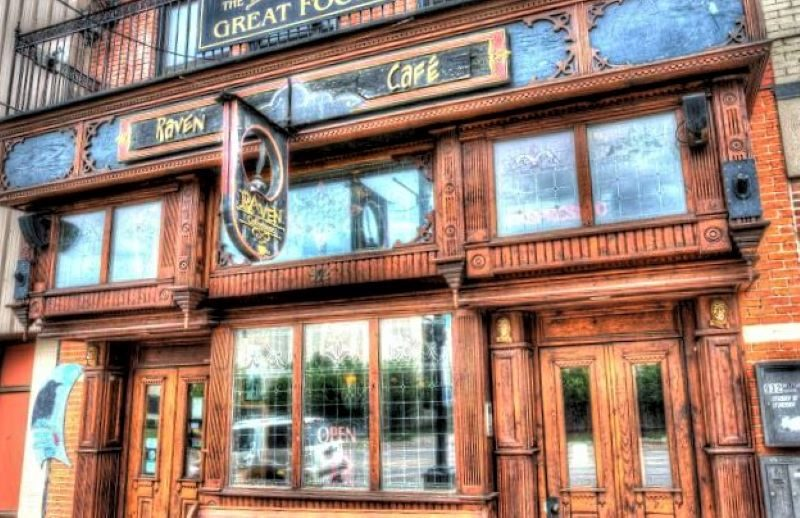

About the Raven Cafe
Source: tripadvisor.com Source: bluewater.org Source: roadfood.com
{kind=link}
{kind=link}
4.7 Stars
A cozy cafe in downtown Port Huron, MI. This cafe features various artists and their works, of different types. They have a library of books for sale! It's the perfect place for anyone who enjoys their coffee with a good book. The Raven patrons regularly leave notes in the tables and journals. They have an online gallery of the notes that had to be thrown out, due to overflowing.
Menu: ravencafeph.com/menus
Hours:
Monday - Friday:
7:30 am - 9:00 pm
Saturday & Sunday:
9:00 am - 9:00 pm
Reviews
"I wish this gem wasn't so far away from me. Although maybe it's a good thing it is. 😊
We stopped in for coffee and dessert. Our waitress was very outgoing and friendly, made great recommendations, and dressed/presented our desserts beautifully. The Raven has such a cool vibe. There is so much to look at, read, and chat about while waiting for your food.
If you have no idea what to order, just ask. I don't think you will be disappointed. I'm looking forward to our next trip there and enjoying more of their wonderful food/coffee"
- Jenn Ooten, 3 months ago, 5 stars
"This cafe has got to be one of my favorite spots in Port Huron. I went in recently and picked up their Cider Supreme and a light lunch of Mushroom and Brie with a Bruschetta and it was an incredible experience. Everything felt made with care. And especially on a Tuesday, the staff was kind and efficient, and it showed with our meal. If you’re ever in town, stop in for a good meal or one of their thousands of books and board games to make your time here unforgettable.
Kid-friendliness: Board games for the more energetic, classic children’s literature for the more reserved, and a great view of the Michigan/Canadian river border should be enough to keep any kid entertained for family groups.
Wheelchair accessibility: Ramped entrance into the main hall is a bonus, not sure if there’s an alternative way to the upper levels but could be a unique addition! You won’t be missing out on its charm in either case."
- Justin LaBelle, 2 weeks ago, 5 stars
Contact
| Website: | ravencafe.ph |
|---|---|
| Address: | 932 Military Street, Port Huron MI 48079, USA |
| Phone: | (810) 984-4330 |
| Email: | info@ravencafeph.com |